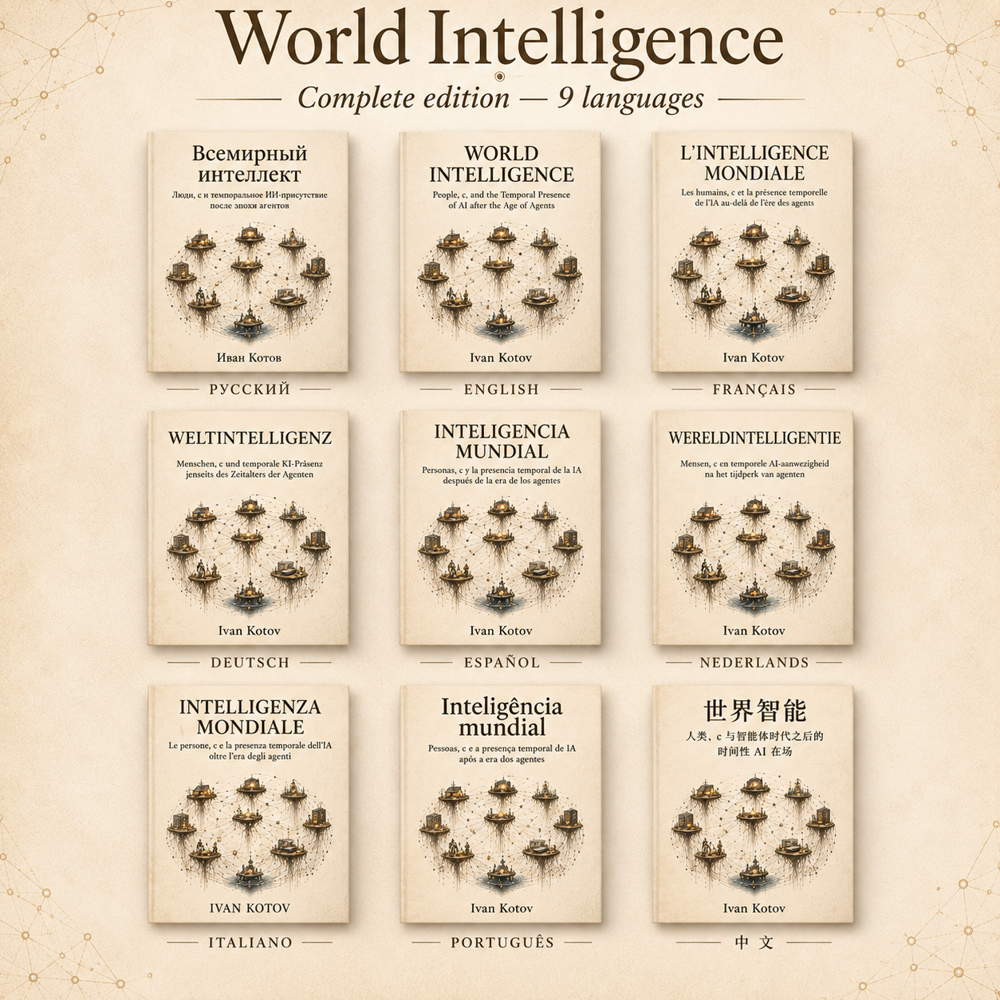
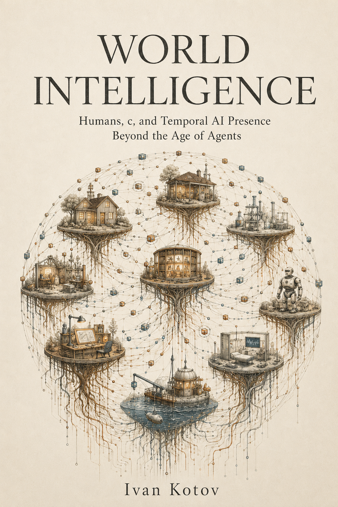
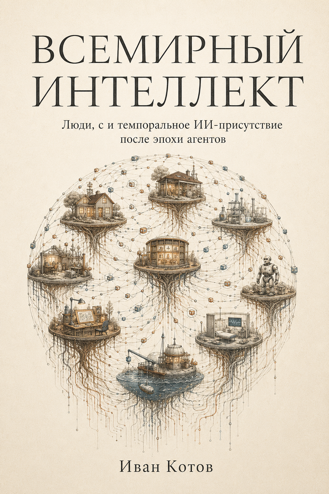
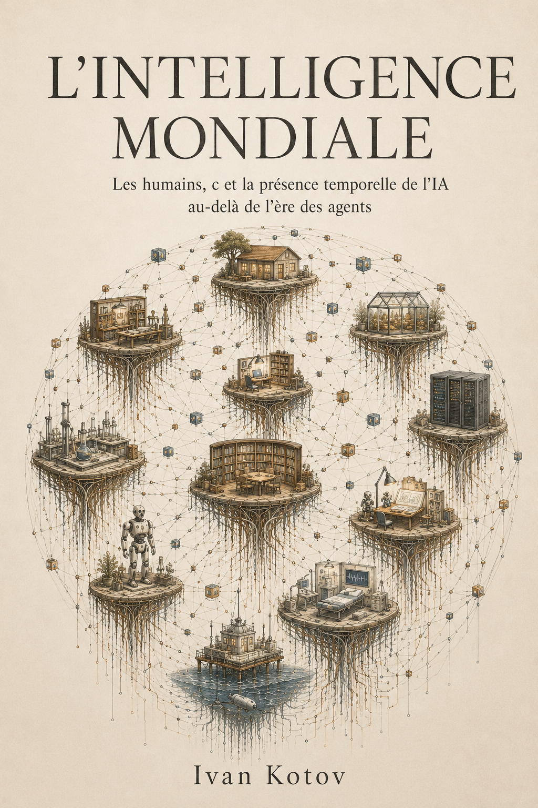
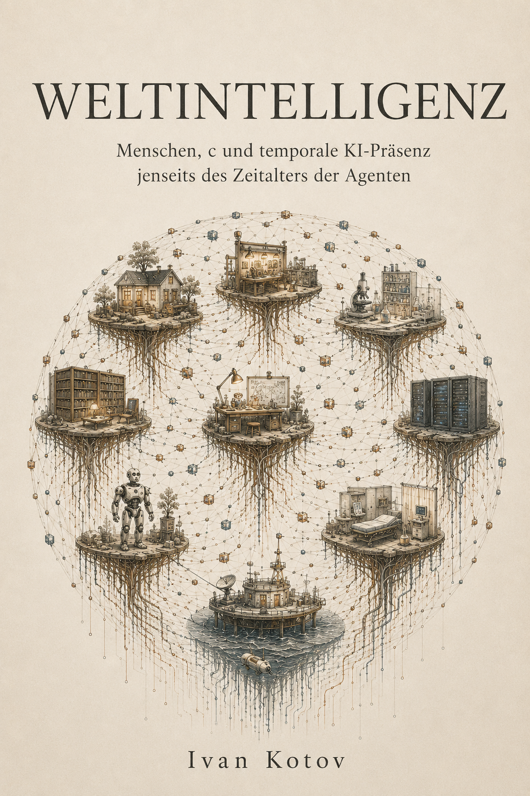
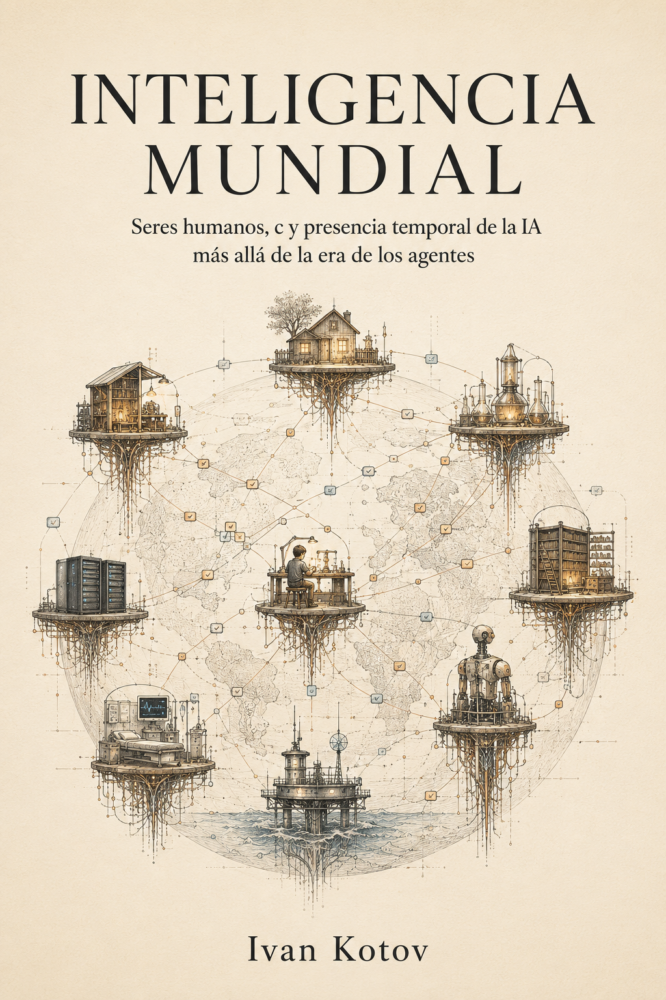
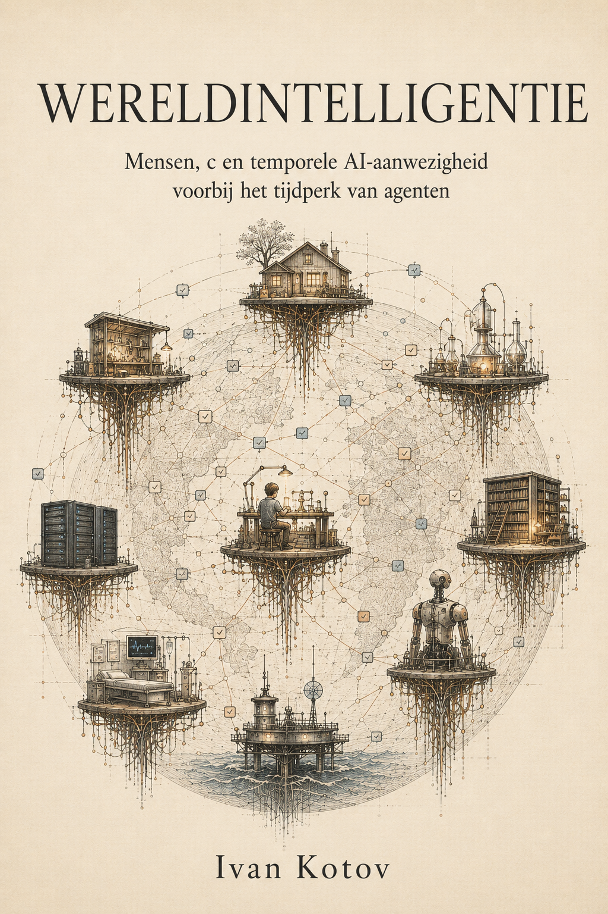
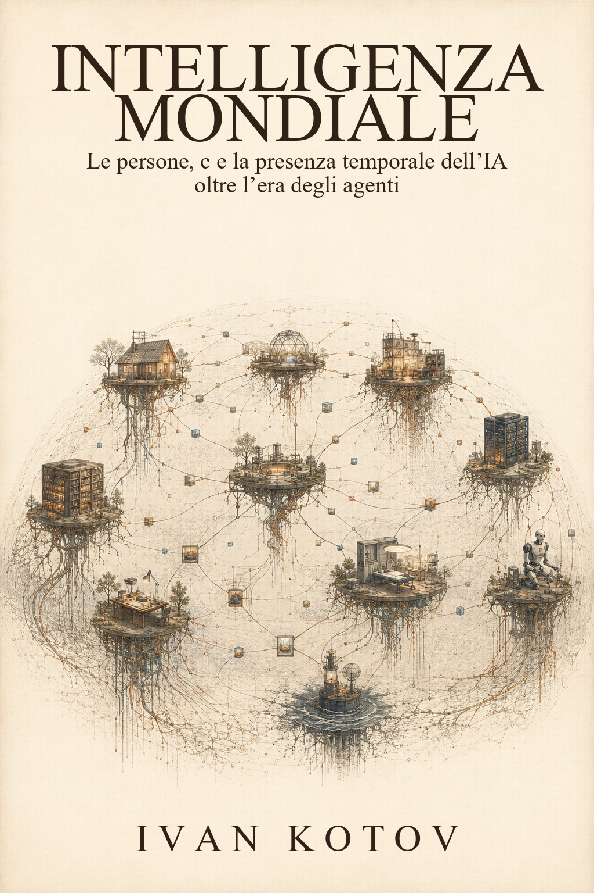
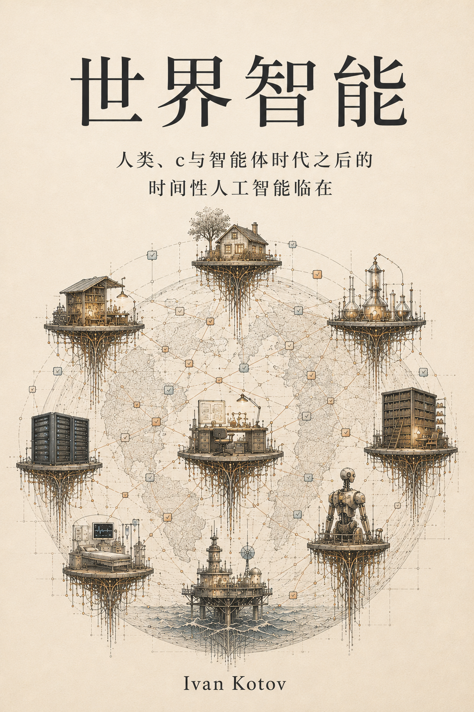
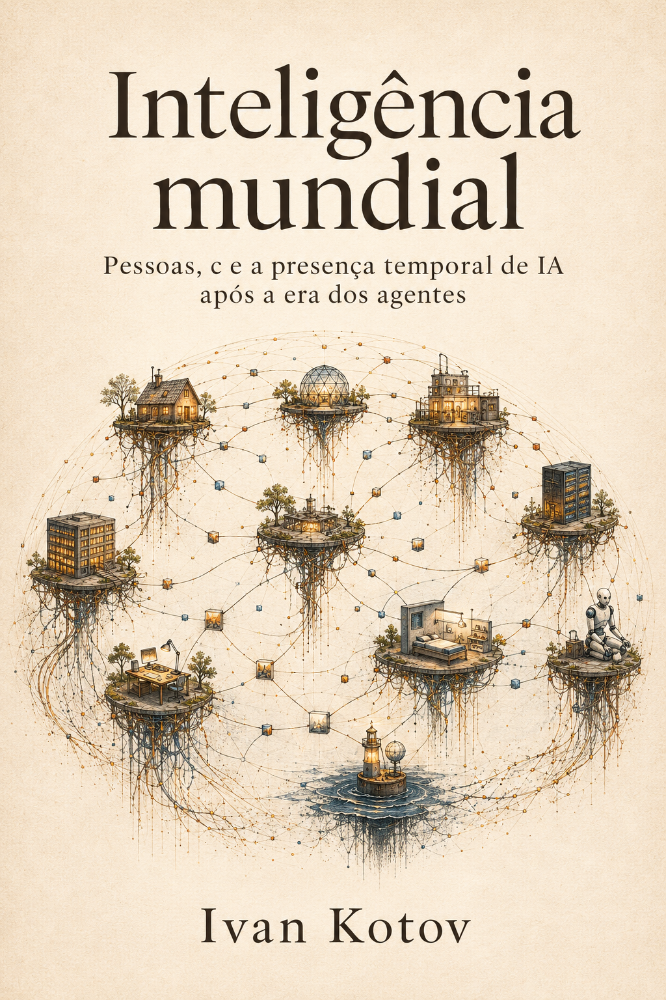

structure
Complete book
Prologue + Chapters 1–22 + Epilogue.

Complete multilingual book · v1.3.0
Humans, c, and Temporal AI Presence Beyond the Age of Agents
A complete work by Ivan Kotov about people, c, temporal AI presence, memory, governed authority, embodiment, infrastructure, experience, and distributed intelligence.
Edition
structure
Prologue + Chapters 1–22 + Epilogue.
languages
English, Russian, French, German, Spanish, Dutch, Italian, Simplified Chinese, and Português brasileiro (pt-BR).
formats
Markdown, PDF and DOCX; EPUB for pt-BR, FB2 for the eight earlier editions. ZIP packages are optional.
release
Brazilian Portuguese was added in v1.3.0. The eight earlier editions retain their original content versions and v1.1.0 file URLs.
Languages
Digital-voice audiobooks are available on Spotify in eight languages. The Brazilian Portuguese audiobook is in preparation.
en-GB · content v1.0.0

World Intelligence
ru · content v1.0.0

Всемирный интеллект
fr-FR · content v1.0.0

Intelligence mondiale
de · content v1.0.0

Weltintelligenz
es · content v1.0.0

Inteligencia Mundial
nl-NL · content v1.0.0

Wereldintelligentie
it-IT · content v1.1.0

Intelligenza mondiale
zh-CN · content v1.0.0

世界智能
pt-BR · content v1.0.0 · 2026-11-14

Inteligência mundial
Pessoas, c e a presença temporal de IA após a era dos agentes
Audiolivro em preparação
| Language | Tag | Content version | Markdown | EPUB | DOCX | FB2 | ZIP | |
|---|---|---|---|---|---|---|---|---|
| English | en-GB | content v1.0.0 | Markdown | — | DOCX | FB2 | ZIP | |
| Русский | ru | content v1.0.0 | Markdown | — | DOCX | FB2 | ZIP | |
| Français | fr-FR | content v1.0.0 | Markdown | — | DOCX | FB2 | ZIP | |
| Deutsch | de | content v1.0.0 | Markdown | — | DOCX | FB2 | ZIP | |
| Español | es | content v1.0.0 | Markdown | — | DOCX | FB2 | ZIP | |
| Nederlands | nl-NL | content v1.0.0 | Markdown | — | DOCX | FB2 | ZIP | |
| Italiano | it-IT | content v1.1.0 | Markdown | — | DOCX | FB2 | ZIP | |
| 简体中文 | zh-CN | content v1.0.0 | Markdown | — | DOCX | FB2 | ZIP | |
| Português brasileiro | pt-BR | content v1.0.0 | MD | EPUB | DOCX | — | ZIP |
Integrity
multilingual package
The earlier v1.1.0 archive contains eight languages and excludes pt-BR.
checksums
Historical checksum sidecar for the v1.1.0 assets.
manifest
Historical manifest for the v1.1.0 boundary of 35 assets.
Portuguese edition · Zenodo
The Portuguese translation is archived separately from the earlier eight-language edition.
Rights
Copyright © 2026 Ivan Kotov. All rights reserved. Public access grants no audiobook, text-to-speech, synthetic-voice, voice-cloning, adaptation, derivative, or commercial model-training licence.
The nine reading editions are available through GitHub, with their respective tagged file URLs. The Portuguese edition has a separate Zenodo record; the earlier eight-language DOI and concept DOI remain unchanged. Limited permissions are defined in the author LICENSE.